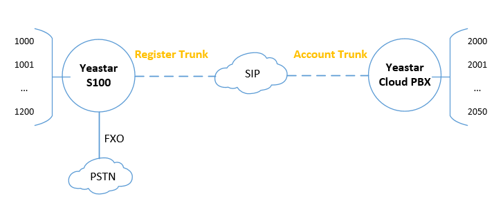

Interconnect Yeastar Cloud PBX and S-Series VoIP PBX
Interconnect Yeastar Cloud PBX with Yeastar S-Series VoIP PBX to make free calls between the two PBXs and share trunks.
In this topic, we tested Yeastar Cloud PBX and Yeastar S300.
| Yeastar Cloud PBX | Yeastar S300 |
| Firmware: v81.5.0.7 | Firmware: v30.8.0.8 |
| Extension: 2000-2050 | Extension: 1000-1200 |
Note: The two PBXs should not have the same extension number, or the calls
between the two PBXs will fail.
